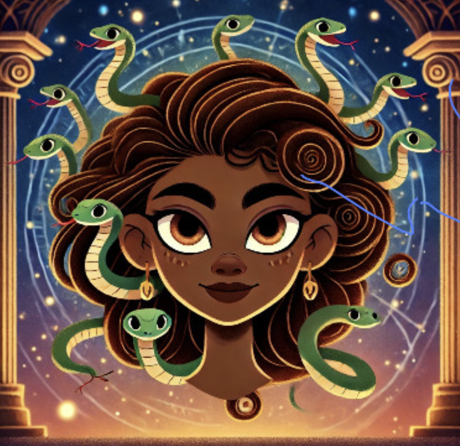
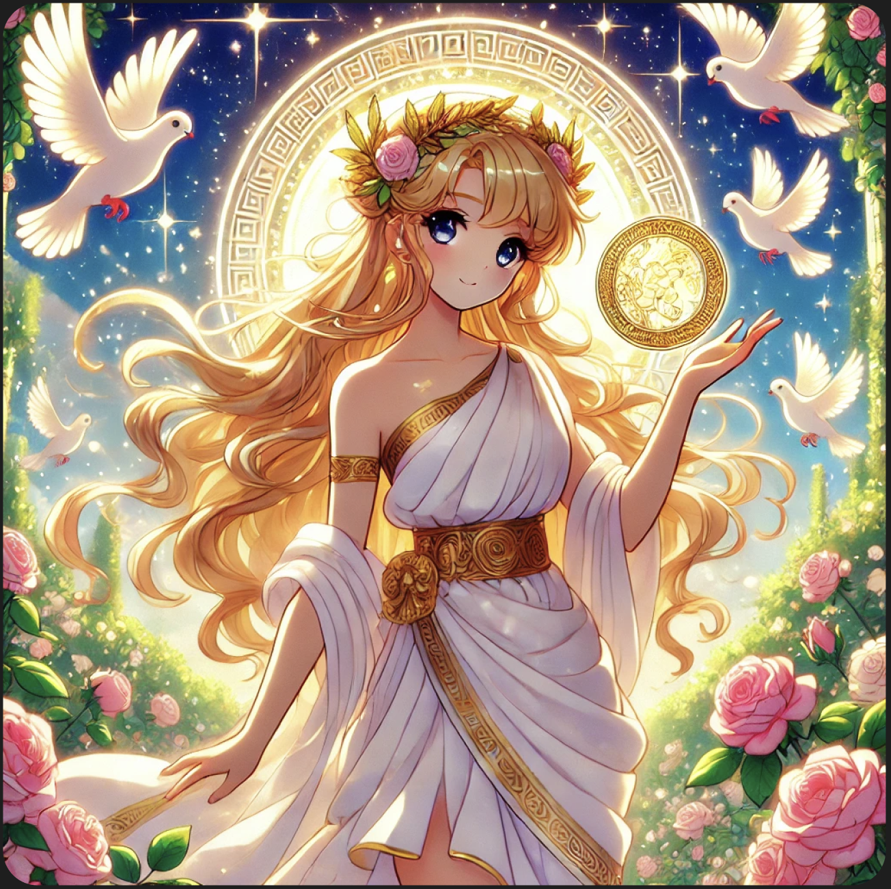
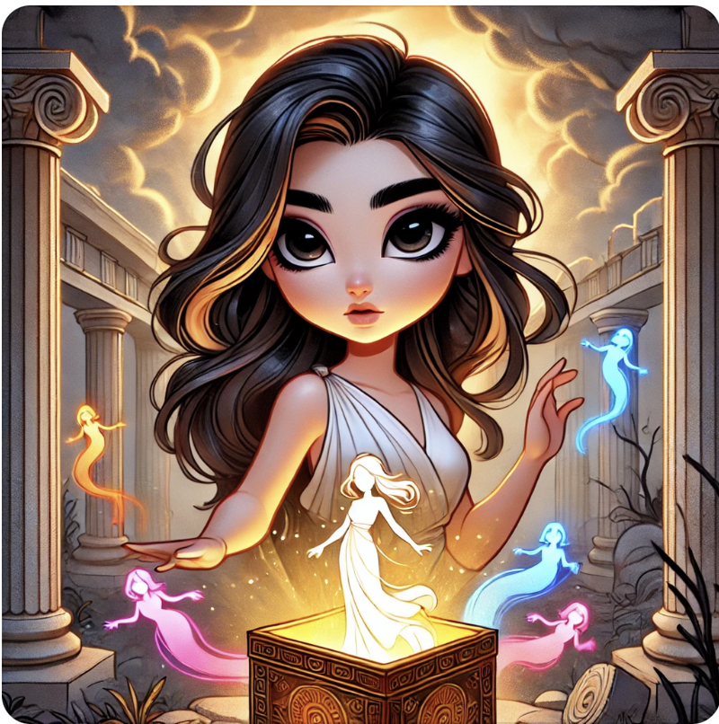

Over ons
Wist jij dat de alledaagse merknamen Nike en Pandora eigenlijk diepgeworteld zijn in de fascinerende
welerg van de Griekse mythologie? En wij zijn sinds 2020 gestart met onze podcast over Griekse
mythologie. Wij hebben elke week een nieuwe aflevering klaarstaan over verschillende onderwerpen binnen
deze wereld.Tune in en ontdek de pakkende verhalen dat door ons verteld wordt, the hosts. Stel
gerust je vragen op onze website en misschien wordt die bij de volgende aflevering behandeld!
The Hosts

Saphire, 19
Hey daar, ik ben Saphire! Mijn fascinatie voor Griekse mythologie begon op school, toen mijn docent
mij
kennis liet maken met de wereld van Goden, helden en eeuwenoude verhalen! Sinds dien ben ik volledig
geobsedeerd geraakt en is het daarom nu aan mij de beurt om jullie te overtuigen! 🐍

Aetheria, 23
Hoi, Ik ben Aetheria! :D Al sinds ik jong ben heb ik heel veel interesse in de Griekse Mythologie.
Mijn
opa vertelde me vroeger altijd mythes, die ik tot de dag van vandaag heb onthouden. Ik leer graag
over
de verhalen en ik vind het vooral leuk om er met anderen over te praten!

Lee, 21
Heyy Lee hier! Wat vind ik het heerlijk om mee te mogen hosten aan deze podcast. Sinds de boeken van
Percy Jackson (waar ook ook films erover zijn gemaakt!) ben ik begonnen met mijzelf verder te gaan
verdiepen in de Griekse mythologie. Alle verschillende verhalen en verschillende theorieën hierover
blijven mij steeds weer verbazen. Een ding is zeker, onze podcast stellen je niet teleur!